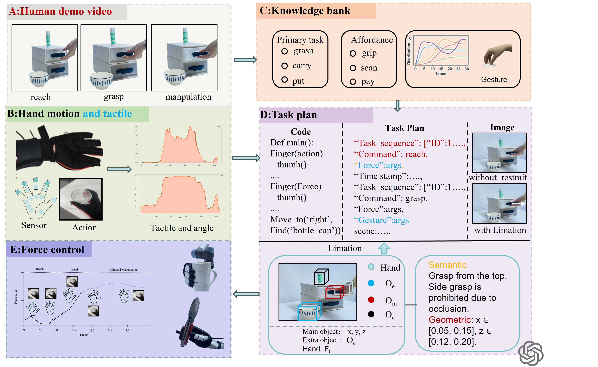

Robotic manipulation tasks are evolving towards diversification and refinement. However, existing methods are limited by single-modal information and a lack of high-degree-of-freedom fine control capabilities. This study proposes a multimodal dexterous manipulation learning framework that enables a five-fingered dexterous hand to achieve human-level long sequence dexterous manipulation capabilities using human demonstration data. The framework collects human demonstration data using a WiseGlove glove and a RealSense camera, and the hand manipulation process is divided into five stages: approaching, grasping, manipulating, releasing, and placing, and combines them with visual language models (VLMs) for task understanding and subtask planning. An adaptive algorithm that dynamically adjusts the fingertip force threshold and grasping speed based on object characteristics and real-time feedback is also proposed to solve the problem of grasping collision and object deformation during operation. Experimental results show that the method can realize smooth transitions and stable operations between objects with different stiffness and flexibility. In addition, the method supports cross-target and cross-task generalization, which significantly improves the robustness and accuracy of dexterous grasping and manipulation.
Overview of the human demonstration-driven robot execution pipeline.(A) Demo Video: Key frames from human demonstrations illustrate sequential actions for task segmentation. (B) Hand Motion and Tactile: A glove records joint angles and tactile data, providing motion-force features per phase. (C) Knowledge Bank: Encodes task primitives, object affordances, and gesture priors from large-scale data. (D) Task Plan: GPT-4o generates symbolic task plans from video and sensor input, including high-level commands and low-level pseudo-code, with time-aligned force and gesture annotations. Constraints: The system reasons over object-object-hand constraints using semantic and geometric rules (e.g., avoid side grasp under occlusion), enabling adaptive behavior. (E) Force Control: Executes phase-specific actions using adaptive force thresholds and tactile feedback.
